OSM + HRSL data show that many villages are well represented in OSM while some are not existing at all
Official village polygons indicate 17196 villages, OSM village data show x residential areas
The polygonised villages are sometimes covering one village in more than one polygon
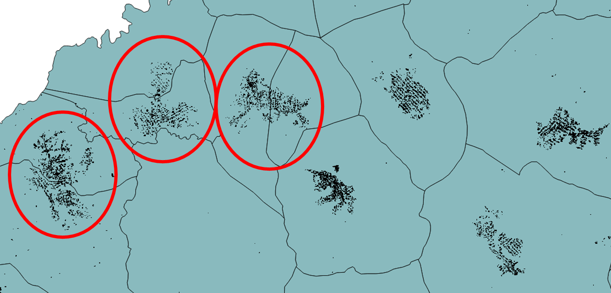Resampling of the HRSL
to a lower resolution was done with the help of the warp function in QGIS, in
order to aggregate isolated pixels
into more uniform populated surfaces. The
resampling was done with two algorithms (nearest neighbor (NN) and bilinear
interpolation (BI))
, each with 3 factors: 2, 5, 10 and 20. From the visual
inspection, the Bilinear Interpolation with factor 2 seems to give the best
results
(the ones that have the lesser data loss: view examples below). The
resulting file was then vectorized.
Figure 1 Resampled with NN, F=20
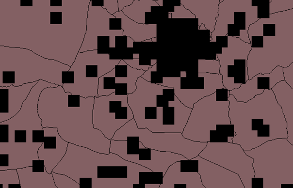Figure 2 Resampled with BI, F=20
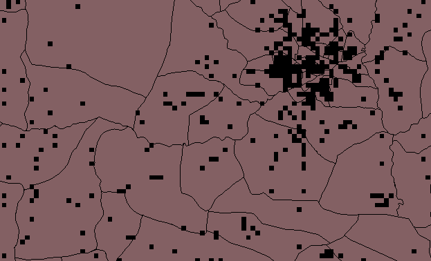Figure 3 Resampled with NN, F=10
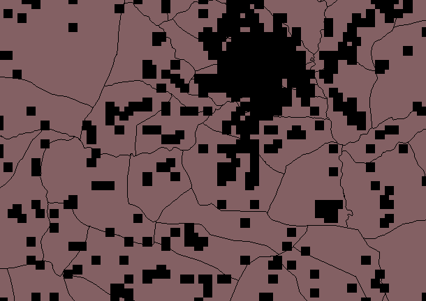Figure 4 Resampled with BI, F=10
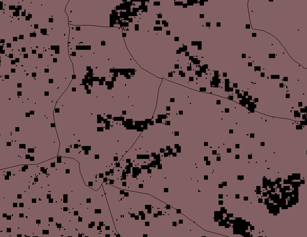Figure 5 Resampled with BI, F=2
Figures 5 and 6 show that resampling by a factor of 2 shows good approximation of village extents, with minimum data loss, therefore this file was vectorized.(below)
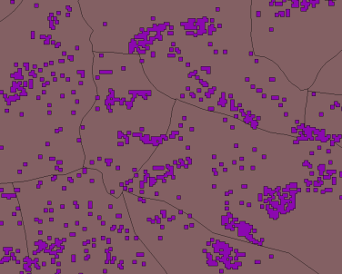Figure 6 Snapshot of vector file resulted from the BI with F=2
The vectorization still leads to 984942 settlement polygons which we are trying to simplify in order to select and detect the village clusters with a reasonable size for mini-grid development. Smaller structures, such as isolated farms, are more likely to be electrified via stand-alone systems such as SHS.
For further insight into the population data, the raster file resampled with BI and F=2 was chosen and vectorized.
The next steps involve processing of the different available datasets in order to better understand them: buffering of the vector file and application of the zonal statistics algorithm in QGIS, that shows statistical population data based on each polygon as an output. The files used were: HRSL population layer (raster) and TZ villages (vector file which includes census data).
After inspecting the resulted vector file, the first conclusions are that there are various differences between the HRSL data and the census data. For some villages the difference could be up to -43000 or +23000 inhabitants (pictures below). Almost 5000 (out of 17196) villages have no census data.
Below, there are pictures of the extreme differences and one example of a village where the difference between census and HRSL data (CFB) is 0.
For the village of Kanyenja, CFB is approximately -26000, most of it concentrated in the northwest corner.Katindiuka is another example of a mismatch, where CFB is -44000, mostly concentrated in the North.
The Wasa and Nkalama villages are the other extremes, where CFB is +23000 and +21000 respectively. Lastly, Nayeme village, where CFB is 0. It can be seen that the polygon is completely covered by built-up area.
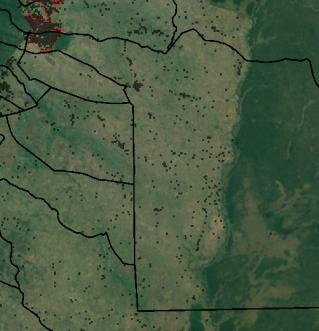Figure 7 Village of Kanyenja
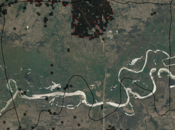Figure 8 Katindiuka Village
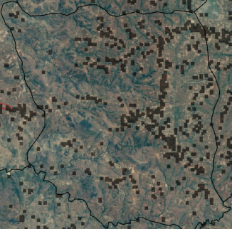Figure 9 Village of Wasa(Census-HRSL difference +23000)
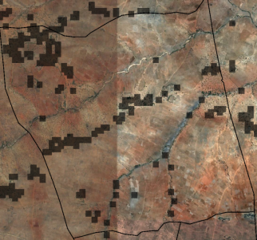Figure 10 Village of Mkalama (Census-HRSL difference is +21000)
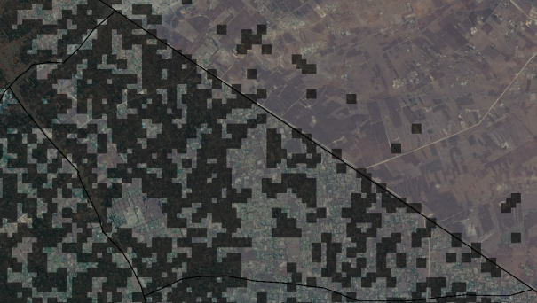Figure 11 Village of Nayeme (difference is 0).
Clean grid data – the grid data contained data from 4 sources: AICD, WorldBank, REA and OpenStreetMaps. However, WB and AICD data is not accurate, therefore was excluded from the analysis. Also, the 600 kV lines in the dataset are most probably mislabeled.
Distance to grid was calculated from the centroids of each population cluster to the grid. This was done with the help of different algorithms:
Figure 12 Snapshot of cluster layer (on and off grid)
The prioritization excel sheet contains population and surface area data based on the unique id of every village. Population density data was also calculated. Each ranking system (population, area, number of schools, health sites, water access points) represents a number (0..1) which is basically the (population/pop density/area…) of the respective village relative to the biggest number in the dataset. Considering weighting factors for each criterion, a global ranking resulted, with “1” being Dar es Salaam.
From the cluster shapefiles (centroids and polygons) a few entries were deleted, as they were out of scope (some were outside the boarders of Tanzania; some were not covering a village). However, the entries were saved in separate files. The two polygon files (off and on grid) were merged again into one. The latest step is to bring into the Cluster centroid file the information contained in the "TZ_village" vector file (village, ward, district and region names, and global horizontal irradiance).
One other issue encountered in the data analysis was the fact that island cities and villages were considered with no access to the grid (but they nevertheless have access to electricity) and with a relatively big distance to the grid. This caused problems in the rankings, so they were filtered out from the dataset. Moreover, the sites with less than 100 inhabitants were also taken out of the dataset, some of them being inaccurately classified as villages or out of scope for mini grid development (see example below). They were saved separately, as a shapefile and as a new tab in the prioritization excel file.
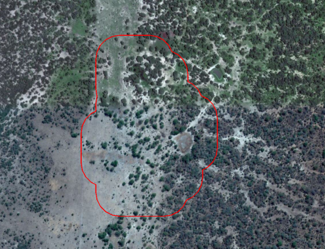Figure 13 Example of a false positive
The Shapefile version has been cleaned of unnecessary information, such as number of public buildings, health sites, etc. and except the grading system; also a rank was implemented for ease of visualization. In the excel file, the second tab is the legend for each column. This includes a short description, source and date of download.